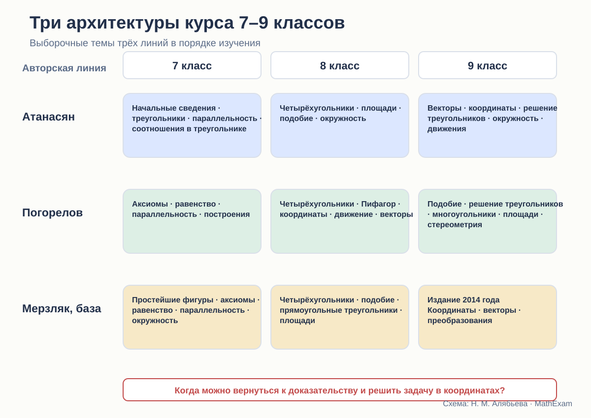

Стройность школьного курса геометрии · статья 10 из 12
Три архитектуры школьного курса планиметрии
Когда ученик уже может доказать параллельность? Сравним порядок тем в трёх учебниках и решим одну задачу двумя способами.

Когда класс готов доказывать параллельность

Отрезки AC и BD лежат на разных прямых и пересекаются в точке O, которая делит каждый из них пополам. Соединены A с B и C с D.
В каком месте курса уже можно доказать AB ∥ CD? Предложите составить цепочку из трёх знакомых результатов и назвать тот, которого классу пока не хватает.
Разбор для учителя
Вертикальные углы при O равны. По двум сторонам и углу между ними треугольники AOB и COD равны, поэтому ∠BAO = ∠DCO. При секущей AC это накрест лежащие углы для прямых AB и CD. Признак параллельности завершает доказательство. Если пройден лишь первый признак равенства треугольников, разумная промежуточная цель — равенство углов.
В какой момент можно закончить доказательство
В задаче выше первый признак равенства треугольников даёт равенство углов. Чтобы из них вывести параллельность AB и CD, нужен ещё один результат. После темы «Равенство треугольников» вполне уместно остановиться раньше. Условие задачи остаётся тем же, меняется вопрос учителя: «Какие стороны и углы мы уже вправе отметить?»
В главе II учебника Атанасяна первый признак появляется в § 1, затем в § 2 рассматриваются линии треугольника и свойства равнобедренного треугольника, а второй и третий признаки собраны в § 3. Для конца нашего решения надо открыть следующую главу, о параллельных прямых. У Погорелова существование треугольника, равного данному, обсуждается ещё в § 1, п. 10. Первый признак и разбор его доказательства стоят рядом (§ 3, пп. 20–21). В базовом учебнике Мерзляка, Полонского и Якира (7 класс, 2015) в п. 8 разобраны сразу два признака. Но ни наличие второго признака, ни количество пройденных пунктов не снимают вопрос о последнем шаге: почему равенство именно этих углов влечёт параллельность?
Координаты дают второй способ прочитать тот же рисунок
Вернёмся к пересекающимся отрезкам после знакомства с координатами вектора. Можно оставить чертёж как есть и принять общую середину O за начало координат. Пусть A имеет координаты (a, b), а B — (c, d). Середина AC совпадает с началом координат, поэтому C имеет координаты (−a, −b). По той же причине D имеет координаты (−c, −d).
Вычтем координаты начала каждого вектора из координат конца. У вектора AB получим (c − a, d − b). У вектора DC получим (−a + c, −b + d). Это один и тот же ненулевой вектор. Следовательно, длины AB и DC равны, а прямые AB и DC имеют одно направление. Их прямые различны: если бы они совпали, точки A, B, C лежали бы на одной прямой, тогда как прямые AC и BD по условию различны и пересекаются в O. Получаем AB ∥ CD.
Эти два решения хорошо дать на разных уроках. В первом ученик объясняет, зачем понадобились вертикальные и накрест лежащие углы. Во втором — почему выгодно поместить начало координат именно в O и почему для сравнения нужен порядок букв DC. Если поменять его на CD, получатся противоположные векторы. Сам вывод о параллельности сохранится.
Когда возвращаться к задаче
| Линия | Где искать повод вернуться |
|---|---|
| Атанасян и др. | За главой о векторах следует глава X о методе координат. Уже известный результат о двух параллельных прямых можно восстановить вычитанием координат. |
| Погорелов | В примерном планировании 8 класса декартовы координаты, движение и векторы следуют в § 8–10. После § 10 удобно поставить рядом синтетическое и координатно-векторное решения. |
| Мерзляк, Полонский, Якир | В книге для 9 класса (2014) формула координат середины отрезка вводится в гл. 3, § 8, а координаты вектора — в гл. 4, § 13. Ученик может связать эти два результата на одном рисунке. |
Размещение глав говорит, какие средства к этому моменту введены. Чтобы узнать, связал ли их ученик, дайте тот же чертёж без названия метода. Пусть он выберет начало координат, запишет одну пару векторов или одну пару равных углов и пояснит выбор. Его первая содержательная строка скажет о связи тем больше, чем пересказ двух соседних параграфов.
Как читать общую схему курса
При сравнении 7–9 классов полезно отличать первое знакомство с идеей от появления метода. Семиклассник может наложить два треугольника гораздо раньше, чем объяснит наложение языком движений плоскости. А девятиклассник может знать формулу расстояния и всё ещё не догадаться выбрать удобное начало координат. Схема в начале статьи показывает крупные темы. Конкретная задача даёт место, где можно проверить переход от одной к другой.
У меня из этого получается простое решение для планирования. На странице с каждой новой темой я оставила бы знакомый рисунок из предыдущего года с новым вопросом к нему. Сначала ученик обосновал параллельность равными углами. Теперь тот же рисунок помогает ему объяснить, почему противоположные координаты концов отрезка означают, что середина лежит в начале координат.
Какие издания сравниваются
- Л. С. Атанасян и др. «Математика. Геометрия. 7–9 классы. Базовый уровень». 14-е переработанное издание, 2023. Печатное издание — ISBN 978-5-09-102538-5, по ссылке — электронная форма 2023 года.
- А. В. Погорелов. «Геометрия. 7–9 классы». Просвещение, 11-е стереотипное издание, 2022. ISBN 978-5-09-087755-8.
- А. Г. Мерзляк, В. Б. Полонский, М. С. Якир. «Геометрия. 7, 8, 9 классы». Сравнивается базовая линия.
- Т. А. Бурмистрова (сост.). «Геометрия. Сборник примерных рабочих программ. 7–9 классы». Просвещение, 2020. Порядок тем по линиям Атанасяна и Погорелова приведён в разделе тематического планирования.
- А. Г. Мерзляк, В. Б. Полонский, М. С. Якир. «Геометрия. 7 класс». Вентана-Граф, 2015. Глава 2, пп. 7–12.
- А. Г. Мерзляк, В. Б. Полонский, М. С. Якир. «Геометрия. 9 класс». Вентана-Граф, 2014. Главы 3–4 о координатах и векторах.
Ссылки ведут на официальные страницы издательства. Фрагменты страниц приведены в объёме, необходимом для методического и критического анализа; права на учебники и их оформление принадлежат авторам и издательствам.